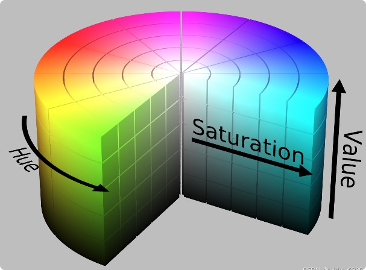
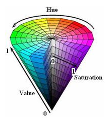
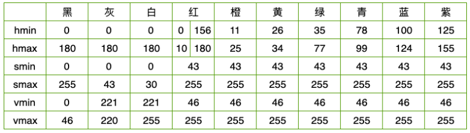
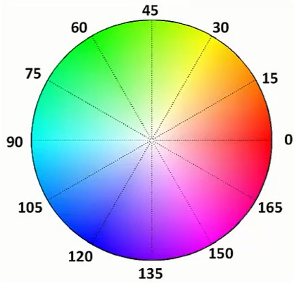

<!DOCTYPE lake>
<p data-lake-id="ueb9b8d28" id="ueb9b8d28"></p><p data-lake-id="ua508a4d5" id="ua508a4d5"><span class="lake-fontsize-14" data-lake-id="ucd5f2ccb" id="ucd5f2ccb" style="color: rgba(0, 0, 0, 0.87)">HSV(Hue, Saturation, Value)是根据颜色的直观特性由A. R. Smith在1978年创建的一种颜色空间, 也称六角锥体模型(Hexcone Model)。</span></p><p data-lake-id="uf1583927" id="uf1583927"><span class="lake-fontsize-14" data-lake-id="u6d147bb5" id="u6d147bb5" style="color: rgba(0, 0, 0, 0.87)">这个模型中颜色的参数分别是：色调（H），饱和度（S），明度（V）</span></p><h3 data-lake-id="h" id="h"><span data-lake-id="u6423343c" id="u6423343c" style="color: rgba(0, 0, 0, 0.87)">色调H</span><a data-lake-id="uade08498" href="https://robot.zhongzhi.com/docs/opencv/02_opencv_advance1/02_hsv/#h" id="uade08498" rel="noopener noreferrer" target="_blank"><span data-lake-id="ue1a70b36" id="ue1a70b36" style="color: rgba(0, 0, 0, 0.26)">¶</span></a></h3><p data-lake-id="u5cedf1e4" id="u5cedf1e4"><span class="lake-fontsize-14" data-lake-id="u1912bd0b" id="u1912bd0b" style="color: rgba(0, 0, 0, 0.87)">用角度度量，取值范围为0°～360°，从红色开始按逆时针方向计算，红色为0°，绿色为120°,蓝色为240°。它们的补色是：黄色为60°，青色为180°,品红为300°；</span></p><h3 data-lake-id="s" id="s"><span data-lake-id="ufaa19387" id="ufaa19387" style="color: rgba(0, 0, 0, 0.87)">饱和度S</span><a data-lake-id="u842cb715" href="https://robot.zhongzhi.com/docs/opencv/02_opencv_advance1/02_hsv/#s" id="u842cb715" rel="noopener noreferrer" target="_blank"><span data-lake-id="u2db5c8ac" id="u2db5c8ac" style="color: rgba(0, 0, 0, 0.26)">¶</span></a></h3><p data-lake-id="u0b254c9e" id="u0b254c9e"><span class="lake-fontsize-14" data-lake-id="ub698bc0b" id="ub698bc0b" style="color: rgba(0, 0, 0, 0.87)">饱和度S表示颜色接近光谱色的程度。一种颜色，可以看成是某种光谱色与白色混合的结果。其中光谱色所占的比例愈大，颜色接近光谱色的程度就愈高，颜色的饱和度也就愈高。饱和度高，颜色则深而艳。光谱色的白光成分为0，饱和度达到最高。通常取值范围为0%～100%，值越大，颜色越饱和。</span></p><h3 data-lake-id="v" id="v"><span data-lake-id="ubc22fbaa" id="ubc22fbaa" style="color: rgba(0, 0, 0, 0.87)">明度V</span><a data-lake-id="u8d9eb85e" href="https://robot.zhongzhi.com/docs/opencv/02_opencv_advance1/02_hsv/#v" id="u8d9eb85e" rel="noopener noreferrer" target="_blank"><span data-lake-id="uefb05413" id="uefb05413" style="color: rgba(0, 0, 0, 0.26)">¶</span></a></h3><p data-lake-id="u37660dd8" id="u37660dd8"><span class="lake-fontsize-14" data-lake-id="u2eecc363" id="u2eecc363" style="color: rgba(0, 0, 0, 0.87)">明度表示颜色明亮的程度，对于光源色，明度值与发光体的光亮度有关；对于物体色，此值和物体的透射比或反射比有关。通常取值范围为0%（黑）到100%（白）。</span></p><p data-lake-id="u9dce3bc2" id="u9dce3bc2"><span class="lake-fontsize-14" data-lake-id="ub72dcf5c" id="ub72dcf5c" style="color: rgba(0, 0, 0, 0.87)">结论:</span></p><ol list="u977e1f43"><li data-lake-id="u345ae011" fid="u2902463e" id="u345ae011"><span class="lake-fontsize-14" data-lake-id="u48748840" id="u48748840" style="color: rgba(0, 0, 0, 0.87)">当S=1 V=1时，H所代表的任何颜色被称为纯色；</span></li><li data-lake-id="u3a04d77f" fid="u2902463e" id="u3a04d77f"><span class="lake-fontsize-14" data-lake-id="u3e6aca6b" id="u3e6aca6b" style="color: rgba(0, 0, 0, 0.87)">当S=0时，即饱和度为0，颜色最浅，最浅被描述为灰色(灰色也有亮度，黑色和白色也属于灰色)，灰色的亮度由V决定，此时H无意义；</span></li><li data-lake-id="u5c1ccbd1" fid="u2902463e" id="u5c1ccbd1"><span class="lake-fontsize-14" data-lake-id="u8228839b" id="u8228839b" style="color: rgba(0, 0, 0, 0.87)">当V=0时，颜色最暗，最暗被描述为黑色，因此此时H(无论什么颜色最暗都为黑色)和S(无论什么深浅的颜色最暗都为黑色)均无意义。</span></li></ol><p data-lake-id="u6d20fce7" id="u6d20fce7"><span class="lake-fontsize-14" data-lake-id="u5539506d" id="u5539506d" style="color: rgba(0, 0, 0, 0.87)">注意: 在opencv中,H、S、V值范围分别是[0,180]，[0,255]，[0,255]，而非[0,360]，[0,1]，[0,1]；</span></p><p data-lake-id="u05c493b3" id="u05c493b3"><span class="lake-fontsize-14" data-lake-id="u1c46f707" id="u1c46f707" style="color: rgba(0, 0, 0, 0.87)">这里我们列出部分hsv空间的颜色值, 表中将部分紫色归为红色</span></p><p data-lake-id="u13c8fc29" id="u13c8fc29"></p><p data-lake-id="ud3f5fbfa" id="ud3f5fbfa"><br/></p><p data-lake-id="u8e88bae7" id="u8e88bae7"></p><p data-lake-id="u6a6b5966" id="u6a6b5966"><br/></p>